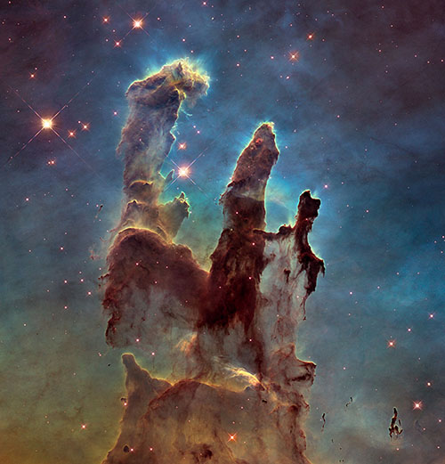

Nebulae are commonly known as the nurseries of new stars. The main classifications of a nebulae are emmision, supernova remnant, planetary, reflection, and dark.
The Pillars of Creation are apart of a larger nebula known as the eagle nebula, and stretches to roughly 4 to 5 light years.
The Crab nebula is an emmision nebula.
The Butterfly nebula is a planetary nebula.